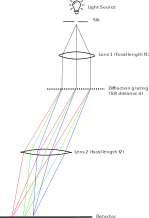
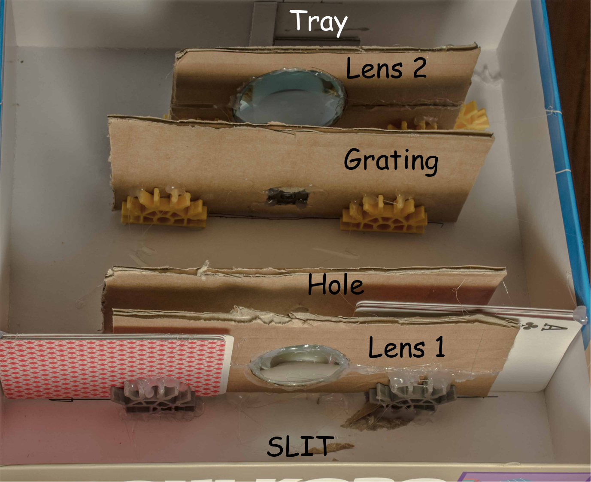
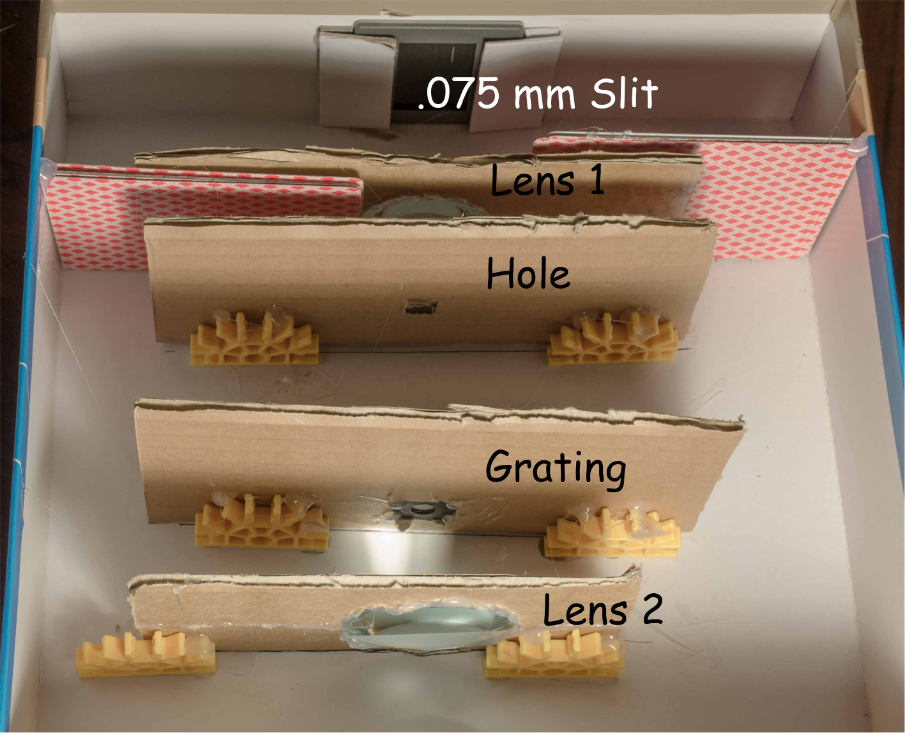
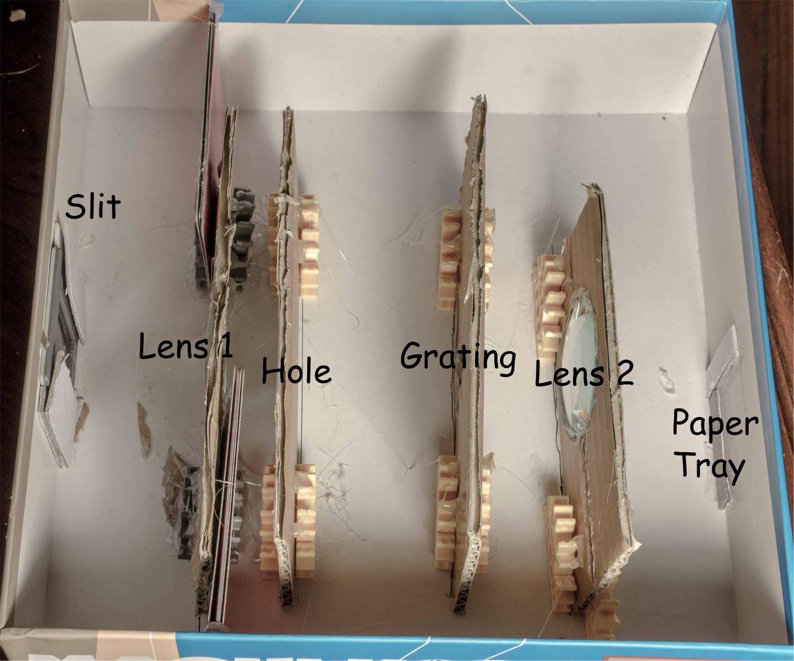
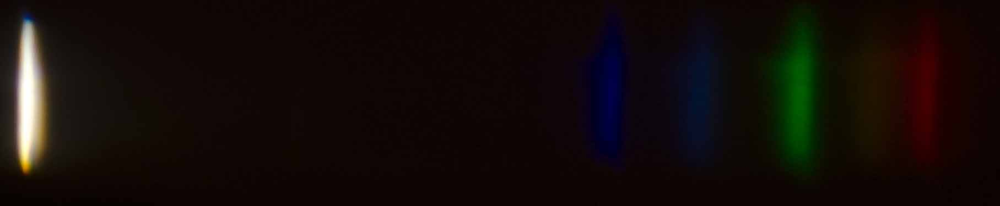

The objective will be to record the spectral lines using light sensitive photo paper using as little money as possible, mostly since I have access to a darkroom at school. We will see how it goes!
Plan
I purchased a "EISCO quantitative spectrometer" from Amazon, and it appears to be nothing more than a diffraction grating and a 400-700 nm wavelength scale inside a box. I also purchased a little diaphragm for eight dollars, and it has slits of widths 0.075, 0.15, and 0.4 mm, along with a nice double slit that I might use some other time as well. The purpose is to decrease the width of the spectral lines.
I anticipate the major challenge being the calibration of the spectral lines. Each photo paper strip will need to be placed in the same exact place for every setup, so that way I can line them all up and match some known spectral lines with their respective wavelengths. If it's linear, I think it won't be too difficult.
The sensitivity of light sensitive photo paper can vary by wavelength. For instance, sodium lamps can be used in darkrooms because some papers aren't sensitive to the monochromatic yellow sodium light. I will see how big of an impact this has?
Update 1:
The spectrometer I got will not suffice! It works really well in combination with the slit, but I won't be able to record the spectral lines, I can only look at them. (The eye resolves unfocused light.) I guess I will build my own. Here's a little illustration I made:

The necessary offset of the second lens can be calculated using the equation $\lambda = d\sin\theta$, due to the path difference necessary for constructive interference.
Update 2:
I purchased two lenses and a diffraction grating from
. The diffraction grating was not the one I wanted (line spacing was 520 lines/mm, which was too small for me. It was also double-grated.), so I used the grating from the thing I got on Amazon.

Front view

Back view

Side view
Container: I used a light tight (game?) box that looked to be a nice size. I then cut a hole where the slit is.
Slit: I used a 0.075 mm slit (5 bucks on amazon) and then made a small tray for it so that I could remove it if needed.
Lens 1: this is a lens of diameter 35 mm and focal length 50 mm, and I fitted it into a cardboard holder. (The cards are there because I misglued the gray supports too far apart.)
Hole: The light coming out of the first lens is mostly parallel, except for light going through the edges of the lens. Towards the edge of the lens, the paraxial approximation no longer holds, so I needed to throw those out.
Lens 2: this is a lens of diameter 50 mm and focal length 50 mm. The extra size was probably not necessary, but I wanted two differently sized lenses to be safe.
Paper tray: This is where the second lens focuses the light, and the photo paper can be inserted here.

Results from a fluorescent lamp
The above image was projected onto the back, and I took a picture of that projection (then used a perspective crop to make it straight). The result is somewhat worse than I expected, and I am not too happy with it.
{kind=link}
{kind=link}
{kind=link}
{kind=link}